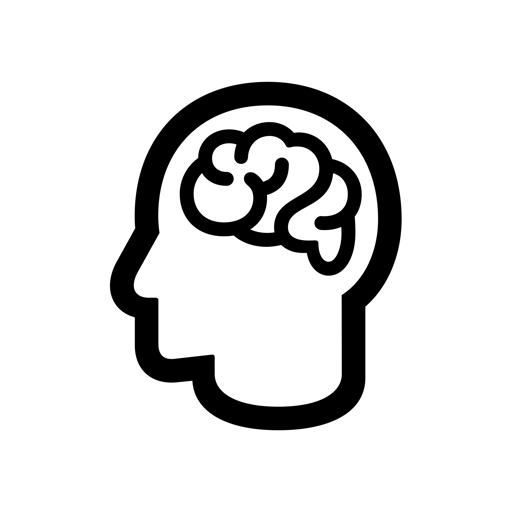

LocalMindLocalMind reads your documents, remembers your conversations, and works on a schedule — natively on your Mac, without a single byte leaving it.
Model runners give you a chat box. LocalMind is the assistant layer on top — the part that makes local AI actually useful.
Drop in PDFs or watch a whole folder. Answers come back with citations to the exact passages — OCR for scans included, embedded entirely on-device.
Build specialist personas with their own model, instructions, and tools. Run four at once side by side — or let them debate and have a moderator pick the winner.
"Every morning at 9, summarize what's new in my documents." Scheduled prompts run in the background and arrive as unread conversations.
Opt-in recall of your past conversations — "as we discussed last week" actually works, powered by on-device embeddings.
Speak, pause, hear the answer, repeat. Recognition and speech synthesis run on-device — a full spoken conversation without the cloud.
A global hotkey summons a floating bubble over any app. Select text anywhere and send it straight to a chat from the Services menu.
Chain agents into reusable workflows — draft → critique → revise — where each step transforms the previous step's output.
MCP servers for files, Git, search, browsers, Apple apps, and more — each tool call needs your approval, and you supply your own keys.
Pure Swift and SwiftUI. Fast cold start, low memory, real macOS behaviors — a Mac app that feels like a Mac app.
Not a promise — an auditable property. The source is public and every possible network connection is documented.
Conversations, documents, memory — all in ~/Library/Application Support/LocalMind/. Read it, back it up, delete it. No account, no server.
There is no tracking SDK in the binary. Watch the app with Little Snitch: localhost traffic and nothing else.
If no local backend is running, LocalMind says so. It never quietly routes your prompt to a hosted API.
Don't trust — read the code, or build it yourself. Every network connection the app can make is listed in PRIVACY.md.
LocalMind walks you through this on first launch — including a model recommendation sized to your Mac's memory.
Install Ollama (free) — or skip this on Apple Intelligence Macs, which work with zero setup.
One click in the app — it recommends the right size for your RAM, like qwen3:8b for 16 GB.
Chat, drop in documents, build an agent — it's all yours, offline.
Yes — LocalMind is MIT-licensed open source. The models it uses (via Ollama and friends) are also free. A paid Pro tier for power features may come later; the core stays free and the code stays open.
macOS 15 or later. Apple Silicon is strongly recommended for model speed — 8 GB of RAM runs small models, 16 GB runs the sweet-spot 8B models comfortably. The Apple Intelligence backend needs macOS 26+ on supported hardware.
Smaller — and better every month. An 8B model handles everyday writing, summarizing, coding help, and document Q&A well. What you trade in raw capability you get back in privacy, zero cost per token, and offline availability.
No. Documents are chunked, embedded, and searched entirely on your Mac — Apple's NaturalLanguage framework or a local Ollama embedding model does the work. See PRIVACY.md for the complete network-connection list.
If you want it to — MCP tool servers (search, files, Git, Apple apps, and more) are opt-in, run locally, and every tool call requires your approval. By default the app makes no internet connections at all.